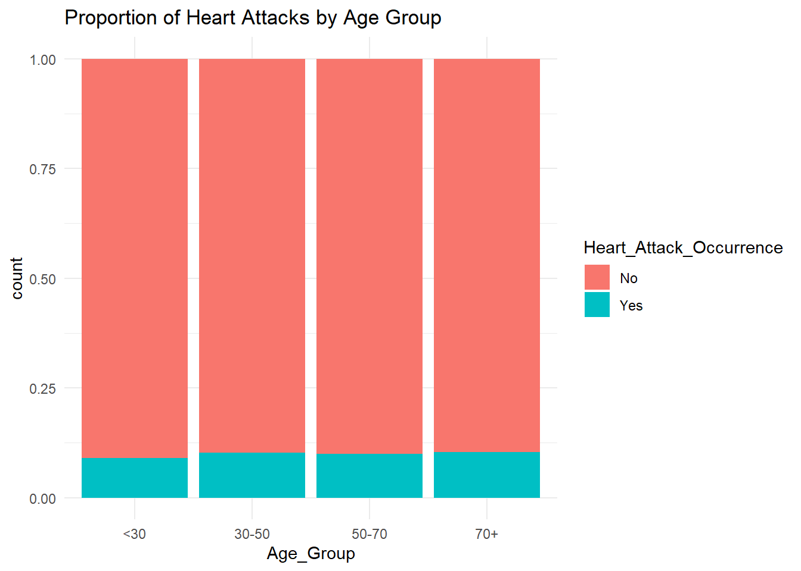
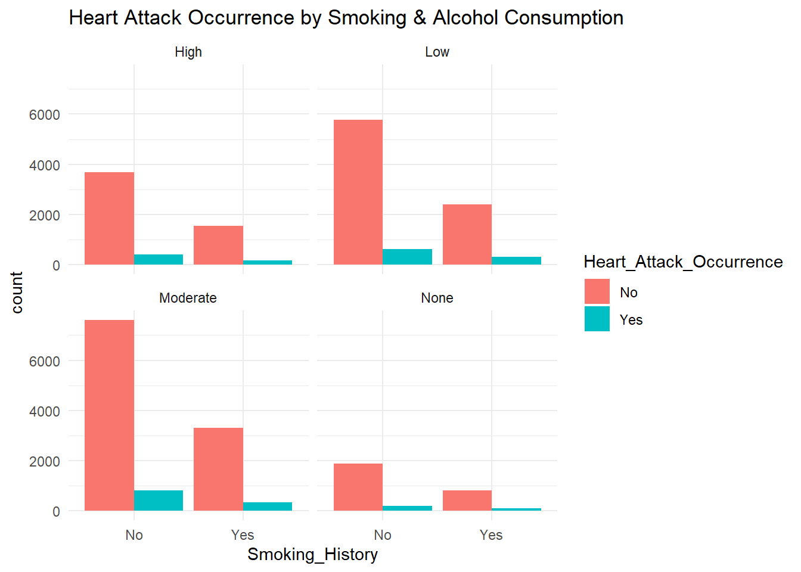
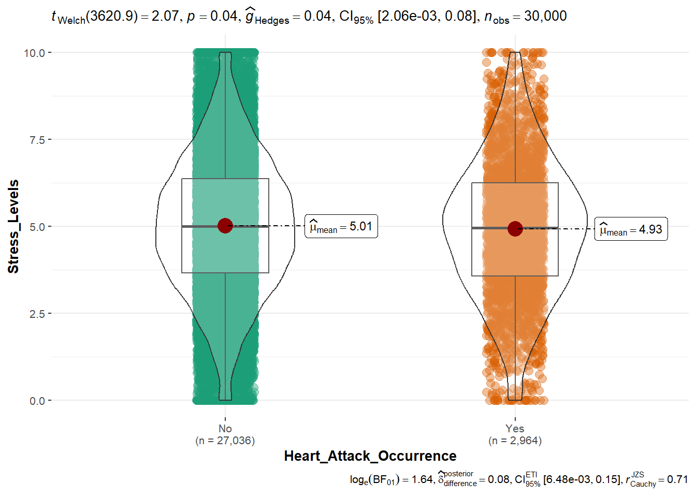
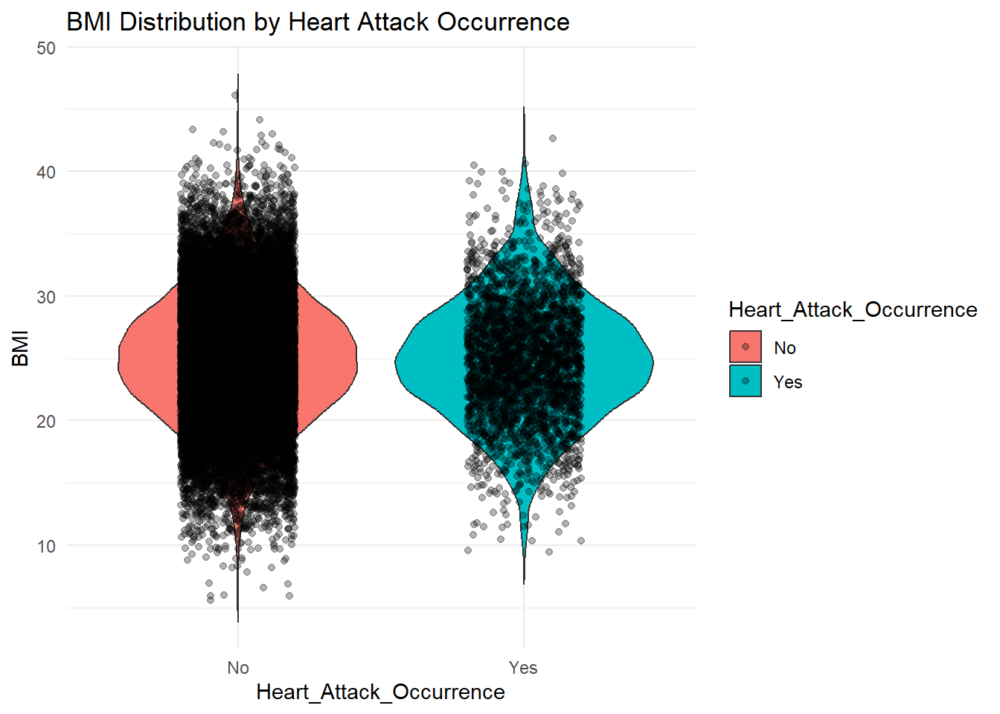
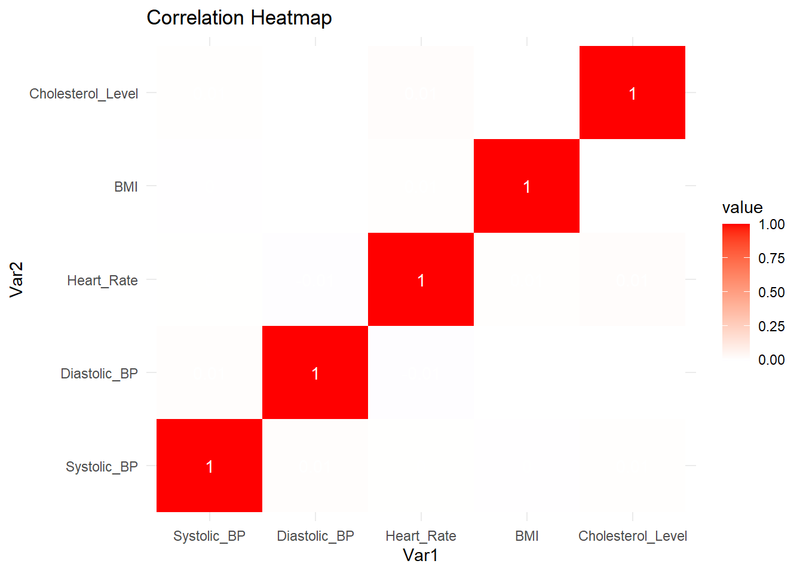
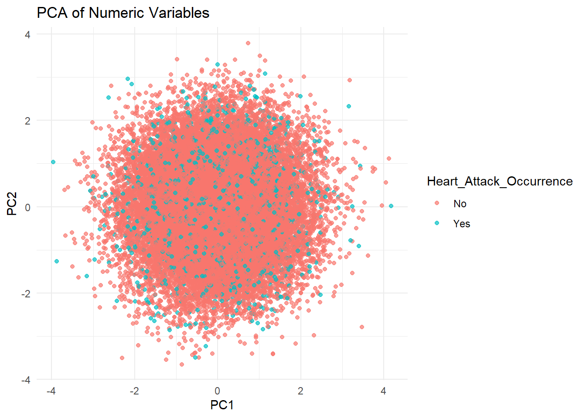

Code
pacman::p_load(tidyverse,readr,easystats,gtsummary, SmartEDA, ggstatsplot,janitor,ggplot2,plotly,treemapify,dplyr,caret)Dhreeti Shah
February 19, 2025
We will first load the the libraries needed for this assignment
We are provided with Japan heart attack dataset which has different factors affected whether or not heart attack occurs
We will first start with data exploration to understand more about the data
Index Variable_Name Variable_Type Sample_n Missing_Count
1 1 Age numeric 30000 0
2 2 Gender character 30000 0
3 3 Region character 30000 0
4 4 Smoking_History character 30000 0
5 5 Diabetes_History character 30000 0
6 6 Hypertension_History character 30000 0
7 7 Cholesterol_Level numeric 30000 0
8 8 Physical_Activity character 30000 0
9 9 Diet_Quality character 30000 0
10 10 Alcohol_Consumption character 30000 0
11 11 Stress_Levels numeric 30000 0
12 12 BMI numeric 30000 0
13 13 Heart_Rate numeric 30000 0
14 14 Systolic_BP numeric 30000 0
15 15 Diastolic_BP numeric 30000 0
16 16 Family_History character 30000 0
17 17 Heart_Attack_Occurrence character 30000 0
18 18 Extra_Column_1 numeric 30000 0
19 19 Extra_Column_2 numeric 30000 0
20 20 Extra_Column_3 numeric 30000 0
21 21 Extra_Column_4 numeric 30000 0
22 22 Extra_Column_5 numeric 30000 0
23 23 Extra_Column_6 numeric 30000 0
24 24 Extra_Column_7 numeric 30000 0
25 25 Extra_Column_8 numeric 30000 0
26 26 Extra_Column_9 numeric 30000 0
27 27 Extra_Column_10 numeric 30000 0
28 28 Extra_Column_11 numeric 30000 0
29 29 Extra_Column_12 numeric 30000 0
30 30 Extra_Column_13 numeric 30000 0
31 31 Extra_Column_14 numeric 30000 0
32 32 Extra_Column_15 numeric 30000 0
Per_of_Missing No_of_distinct_values
1 0 62
2 0 2
3 0 2
4 0 2
5 0 2
6 0 2
7 0 30000
8 0 3
9 0 3
10 0 4
11 0 29613
12 0 30000
13 0 30000
14 0 30000
15 0 30000
16 0 2
17 0 2
18 0 30000
19 0 30000
20 0 30000
21 0 30000
22 0 30000
23 0 30000
24 0 30000
25 0 30000
26 0 30000
27 0 30000
28 0 30000
29 0 30000
30 0 30000
31 0 30000
32 0 30000This provides a brief understanding of the different variables, their type, missing value, distinct values and more
Age Gender Region Smoking_History
Min. :18.00 Length:30000 Length:30000 Length:30000
1st Qu.:33.00 Class :character Class :character Class :character
Median :48.00 Mode :character Mode :character Mode :character
Mean :48.49
3rd Qu.:64.00
Max. :79.00
Diabetes_History Hypertension_History Cholesterol_Level Physical_Activity
Length:30000 Length:30000 Min. : 80.02 Length:30000
Class :character Class :character 1st Qu.:179.55 Class :character
Mode :character Mode :character Median :199.77 Mode :character
Mean :199.90
3rd Qu.:220.16
Max. :336.86
Diet_Quality Alcohol_Consumption Stress_Levels BMI
Length:30000 Length:30000 Min. : 0.000 Min. : 5.58
Class :character Class :character 1st Qu.: 3.644 1st Qu.:21.63
Mode :character Mode :character Median : 4.993 Median :24.96
Mean : 5.002 Mean :25.00
3rd Qu.: 6.353 3rd Qu.:28.36
Max. :10.000 Max. :46.10
Heart_Rate Systolic_BP Diastolic_BP Family_History
Min. : 30.03 Min. : 56.23 Min. : 39.95 Length:30000
1st Qu.: 63.25 1st Qu.:109.79 1st Qu.: 73.26 Class :character
Median : 69.95 Median :119.90 Median : 80.12 Mode :character
Mean : 69.98 Mean :119.91 Mean : 80.03
3rd Qu.: 76.66 3rd Qu.:130.02 3rd Qu.: 86.76
Max. :108.78 Max. :178.77 Max. :117.67
Heart_Attack_Occurrence Extra_Column_1 Extra_Column_2
Length:30000 Min. :0.000007 Min. :0.0000052
Class :character 1st Qu.:0.253308 1st Qu.:0.2473606
Mode :character Median :0.500820 Median :0.4961980
Mean :0.501939 Mean :0.4978940
3rd Qu.:0.750529 3rd Qu.:0.7473954
Max. :0.999965 Max. :0.9999894
Extra_Column_3 Extra_Column_4 Extra_Column_5 Extra_Column_6
Min. :0.0000227 Min. :0.0000934 Min. :0.000105 Min. :0.0000531
1st Qu.:0.2483093 1st Qu.:0.2522110 1st Qu.:0.251803 1st Qu.:0.2559989
Median :0.4976104 Median :0.4976175 Median :0.501987 Median :0.5017726
Mean :0.4981949 Mean :0.5005952 Mean :0.501410 Mean :0.5027631
3rd Qu.:0.7476807 3rd Qu.:0.7505662 3rd Qu.:0.753657 3rd Qu.:0.7511886
Max. :0.9999694 Max. :0.9999869 Max. :0.999995 Max. :0.9998892
Extra_Column_7 Extra_Column_8 Extra_Column_9
Min. :0.0000678 Min. :0.0000449 Min. :0.0000305
1st Qu.:0.2482839 1st Qu.:0.2509790 1st Qu.:0.2502452
Median :0.4988157 Median :0.4985698 Median :0.4984491
Mean :0.4980753 Mean :0.5003557 Mean :0.5002292
3rd Qu.:0.7456378 3rd Qu.:0.7507293 3rd Qu.:0.7512186
Max. :0.9999900 Max. :0.9999300 Max. :0.9999852
Extra_Column_10 Extra_Column_11 Extra_Column_12
Min. :0.0000133 Min. :0.0000008 Min. :0.0000713
1st Qu.:0.2484256 1st Qu.:0.2538092 1st Qu.:0.2505341
Median :0.5031040 Median :0.5067589 Median :0.5038609
Mean :0.5010694 Mean :0.5044949 Mean :0.5008624
3rd Qu.:0.7522686 3rd Qu.:0.7556257 3rd Qu.:0.7511780
Max. :0.9999928 Max. :0.9999578 Max. :0.9999484
Extra_Column_13 Extra_Column_14 Extra_Column_15
Min. :0.0000204 Min. :0.0000025 Min. :0.0000241
1st Qu.:0.2473108 1st Qu.:0.2482152 1st Qu.:0.2482573
Median :0.5041162 Median :0.4943841 Median :0.5009406
Mean :0.5004557 Mean :0.4976507 Mean :0.4999634
3rd Qu.:0.7497094 3rd Qu.:0.7456212 3rd Qu.:0.7487379
Max. :0.9999451 Max. :0.9999779 Max. :0.9999913 # Select relevant variables
heart_data <- heart_data %>%
select(Age, Gender, Region, Smoking_History, Diabetes_History,
Hypertension_History, Cholesterol_Level, Physical_Activity,
Diet_Quality, Alcohol_Consumption, Stress_Levels, BMI,
Heart_Rate, Systolic_BP, Diastolic_BP, Family_History,
Heart_Attack_Occurrence)Since 90% of cases are “No” and 10% are “Yes”, we should analyze them separately for better insights.
# A tibble: 2 × 5
Heart_Attack_Occurrence avg_cholesterol median_cholesterol avg_age median_age
<chr> <dbl> <dbl> <dbl> <dbl>
1 No 200. 200. 48.5 48
2 Yes 200. 200. 48.8 49From the data, we can observe:
The average cholesterol is quite similar between those who had a heart attack (199.79) and those who did not (199.91). The median cholesterol is also close between both groups, with the “No” group at 199.74 and the “Yes” group at 200.08. The average age is almost identical, with a slight increase in the group who experienced a heart attack (48.78) compared to the group who did not (48.46). The median age is similarly close, with the “No” group at 48 and the “Yes” group at 49.
cor_yes <- cor(heart_data[heart_data$Heart_Attack_Occurrence == "Yes",
c("Cholesterol_Level", "Age", "BMI", "Stress_Levels", "Systolic_BP", "Diastolic_BP", "Heart_Rate")],
use = "complete.obs")
cor_no <- cor(heart_data[heart_data$Heart_Attack_Occurrence == "No",
c("Cholesterol_Level", "Age", "BMI", "Stress_Levels", "Systolic_BP", "Diastolic_BP", "Heart_Rate")],
use = "complete.obs")
print("Correlation for Yes cases:")[1] "Correlation for Yes cases:" Cholesterol_Level Age BMI Stress_Levels
Cholesterol_Level 1.000000000 0.024893055 0.0013634639 0.0011737216
Age 0.024893055 1.000000000 0.0039067877 0.0481198743
BMI 0.001363464 0.003906788 1.0000000000 0.0007011648
Stress_Levels 0.001173722 0.048119874 0.0007011648 1.0000000000
Systolic_BP 0.008056854 -0.008678332 0.0014454088 0.0094062628
Diastolic_BP -0.011926165 0.007947327 -0.0062075957 -0.0418252365
Heart_Rate -0.012549857 0.021226952 0.0176801209 0.0220291135
Systolic_BP Diastolic_BP Heart_Rate
Cholesterol_Level 0.008056854 -0.011926165 -0.012549857
Age -0.008678332 0.007947327 0.021226952
BMI 0.001445409 -0.006207596 0.017680121
Stress_Levels 0.009406263 -0.041825237 0.022029114
Systolic_BP 1.000000000 0.022033777 0.005838594
Diastolic_BP 0.022033777 1.000000000 -0.023602091
Heart_Rate 0.005838594 -0.023602091 1.000000000[1] "Correlation for No cases:" Cholesterol_Level Age BMI Stress_Levels
Cholesterol_Level 1.0000000000 -0.002930681 0.001274954 -0.0007789171
Age -0.0029306812 1.000000000 -0.009196905 0.0088178168
BMI 0.0012749543 -0.009196905 1.000000000 0.0049668697
Stress_Levels -0.0007789171 0.008817817 0.004966870 1.0000000000
Systolic_BP 0.0056531434 -0.010933637 -0.003146532 0.0031572010
Diastolic_BP 0.0005935822 0.005669359 0.002741309 0.0105791913
Heart_Rate 0.0177521821 -0.001770225 0.006838744 0.0019931076
Systolic_BP Diastolic_BP Heart_Rate
Cholesterol_Level 0.005653143 0.0005935822 0.017752182
Age -0.010933637 0.0056693593 -0.001770225
BMI -0.003146532 0.0027413085 0.006838744
Stress_Levels 0.003157201 0.0105791913 0.001993108
Systolic_BP 1.000000000 0.0086193388 0.001950470
Diastolic_BP 0.008619339 1.0000000000 -0.008395959
Heart_Rate 0.001950470 -0.0083959588 1.000000000Key takeaways: Cholesterol Level does not seem strongly correlated with any other feature in both groups.
The stress levels and age seem to have a slightly stronger relationship in the “Yes” group compared to the “No” group.
BMI, Blood Pressure (Systolic/Diastolic), and Heart Rate do not show strong correlations with any features, suggesting no immediate linear relationship.
heart_data <- heart_data %>%
mutate(Age_Group = cut(Age, breaks = c(0, 30, 50, 70, 100), labels = c("<30", "30-50", "50-70", "70+")))
ggplot(heart_data, aes(x = Age_Group, fill = Heart_Attack_Occurrence)) +
geom_bar(position = "fill") + # Proportion-based visualization
labs(title = "Proportion of Heart Attacks by Age Group") +
theme_minimal()

Insights
If you look at the ratio or proportion of Yes to total within each group, you may find that certain combinations (e.g., “High” alcohol consumption + “Moderate/Yes” smoking) might have a higher relative incidence of heart attack.
Even though absolute counts of “No” dominate, comparing proportions can reveal risk patterns. For instance, if in “High” alcohol + “Moderate” smoking the share of Yes is noticeably larger than in “Low” alcohol + “No” smoking, that suggests a higher relative risk.
#8.1 Heart Attack vs. Stress Levels

Insights
Statistical Significance vs. Practical Significance: Statistical Significance: The p-value (0.04) indicates a statistically significant difference in mean stress levels between the two groups at the 5% alpha level. Practical/Clinical Significance: The effect size (gHedges = 0.04) is very small, suggesting that although the difference is real (in a statistical sense), it may not be very large in magnitude. Distribution Overlap: If the violins largely overlap, it means many individuals in both groups share similar stress levels, so stress alone may not be a strong discriminator.

Slightly Higher BMI for “Yes”: People who had a heart attack may have a higher average BMI, though the difference may be modest. Overlap: Because the distributions overlap, BMI alone does not perfectly distinguish between heart attack occurrence. It may, however, be one contributing factor among others.
Using a heatmap, we visualize trends between systolic blood pressure, diastolic blood pressure, and heart rate.
library(ggplot2)
library(reshape2) # For reshaping data
# Select relevant numeric variables
heatmap_data <- heart_data %>%
select(Systolic_BP, Diastolic_BP, Heart_Rate, BMI, Cholesterol_Level)
# Compute correlation matrix
cor_matrix <- cor(heatmap_data, use = "complete.obs")
# Convert to long format
melted_cor <- melt(cor_matrix)
# Heatmap
ggplot(melted_cor, aes(Var1, Var2, fill = value)) +
geom_tile() +
geom_text(aes(label = round(value, 2)), color = "white") +
scale_fill_gradient2(low = "blue", high = "red", mid = "white", midpoint = 0) +
labs(title = "Correlation Heatmap") +
theme_minimal()
Insights :
None of these variables strongly correlates with another (at least linearly). This can mean: Each risk factor might act somewhat independently. May need to consider non-linear relationships or interactions rather than simple linear correlations.
See if numeric variables (e.g., Age, Cholesterol_Level, Stress_Levels, BMI, Heart_Rate, Systolic_BP, Diastolic_BP) separate “Yes” vs. “No” cases in a lower-dimensional space.
# Example PCA code
numeric_vars <- heart_data %>%
select(Age, Cholesterol_Level, Stress_Levels, BMI, Heart_Rate, Systolic_BP, Diastolic_BP) %>%
na.omit()
pca_res <- prcomp(numeric_vars, scale. = TRUE)
# Visualize PCA
library(ggplot2)
library(dplyr)
pca_data <- as.data.frame(pca_res$x) %>%
mutate(Heart_Attack_Occurrence = heart_data$Heart_Attack_Occurrence[!is.na(heart_data$Age)]) # align indices
ggplot(pca_data, aes(x = PC1, y = PC2, color = Heart_Attack_Occurrence)) +
geom_point(alpha = 0.7) +
theme_minimal() +
labs(title = "PCA of Numeric Variables",
x = "PC1",
y = "PC2")
Insight: If “Yes” and “No” points form distinct clusters, certain numeric factors may drive heart-attack risk. If they overlap heavily, numeric variables alone may not cleanly separate outcome
# Load necessary libraries
library(caret)
# Set seed for reproducibility
set.seed(123)
# Stratified split: 80% Training, 20% Testing
trainIndex <- createDataPartition(heart_data$Heart_Attack_Occurrence, p = 0.8, list = FALSE)
# Creating Training and Testing Sets
train_data <- heart_data[trainIndex, ]
test_data <- heart_data[-trainIndex, ]
# Check class distribution in train and test sets
table(train_data$Heart_Attack_Occurrence)
No Yes
21629 2372
No Yes
5407 592 ``{r} # Load necessary libraries library(caret)
control <- trainControl(method = “cv”, number = 5, classProbs = TRUE, summaryFunction = twoClassSummary, savePredictions = “final”)
rf_model <- train(Heart_Attack_Occurrence ~ BMI + Systolic_BP + Age + Heart_Rate + Cholesterol_Level + Stress_Levels, data = train_data, method = “rf”, trControl = control, metric = “ROC”, # Use ROC-AUC for imbalanced data importance = TRUE)
print(rf_model)
#varImpPlot(rf_model$finalModel)
##12.3 Plotting the outcome of random forest
`{r}
train_data\(Cholesterol_Level_Cat <- cut(train_data\)Cholesterol_Level, breaks=3, labels=c(“Low”, “Medium”, “High”))
ggplot(train_data, aes(x = BMI, y = Heart_Attack_Occurrence, color = Cholesterol_Level_Cat, group = Cholesterol_Level_Cat)) + stat_summary(fun = mean, geom = “line”, size = 1) + labs(title = “Interaction between BMI & Cholesterol on Heart Attack Risk”, x = “BMI”, y = “Mean Heart Attack Risk”, color = “Cholesterol Level”) + theme_minimal()
Results :
Coefficients: Estimate Std. Error z value Pr(>|z|)
(Intercept) -0.0523207 0.1132713 -0.462 0.644149
Age 0.0014766 0.0004992 2.958 0.003095 ** BMI -0.0031457 0.0018036 -1.744 0.081140 .
Diastolic_BP 0.0009575 0.0008876 1.079 0.280740
Heart_Rate 0.0011789 0.0008881 1.327 0.184387
Stress_Levels -0.0155511 0.0044518 -3.493 0.000477 Smoking_HistoryYes 0.0336846 0.0193652 1.739 0.081958 .
Hypertension_HistoryYes 0.0214626 0.0205319 1.045 0.295871
Alcohol_ConsumptionModerate -0.0699551 0.0202636 -3.452 0.000556 Alcohol_ConsumptionHigh -0.0105962 0.0243683 -0.435 0.663681
Diet_QualityAverage 0.0414591 0.0245110 1.691 0.090751 .
Diet_QualityGood 0.0662170 0.0244418 2.709 0.006745 ** Physical_ActivityModerate 0.0576200 0.0215000 2.680 0.007362 ** Physical_ActivityHigh -0.0004257 0.0229865 -0.019 0.985226
Diabetes_HistoryYes 0.0684589 0.0218992 3.126 0.001771 ** — Signif. codes: 0 ‘’ 0.001 ’’ 0.01 ’’ 0.05 ‘.’ 0.1 ’ ’ 1
(Dispersion parameter for binomial family taken to be 1)
Null deviance: 70403 on 26984 degrees of freedomResidual deviance: 70331 on 26970 degrees of freedom (3015 observations deleted due to missingness) AIC: 70361
Number of Fisher Scoring iterations: 5 ```
Cholesterol Level and BMI are among the top predictors of heart attack risk. Systolic BP and Heart Rate also play a role but seem slightly less impactful. Age has the least importance in this specific model.
Higher cholesterol levels (blue line) show a consistently higher heart attack risk, but it slightly decreases as BMI increases. Lower cholesterol (red line) has a steeper decline in risk with increasing BMI. Medium cholesterol (green line) has a sharp drop at a certain BMI threshold, suggesting a possible nonlinear effect. Overall, cholesterol modifies the relationship between BMI and heart attack risk, showing an interaction effect. 3. Alternative Visualizations for Variable Comparisons
Boxplots & Violin Plots: Could be used to check how heart attack risk varies across BMI and cholesterol levels. Scatter Plots with Color/Size Encoding: Helped check relationships between continuous variables like BMI, Cholesterol, and Heart Rate. 3D Scatter Plot: Would be useful to further explore trends across three continuous features.